직업상담사-2급 (2021-08-14 기출문제)
1과목: 직업상담학
1. 진로 선택과 관련된 이론으로 인생초기의 발달 과정을 중시하는 이론은?
- 인지적 정보처리이론
- 정신분석이론
- 사회 학습이론
- 진로발달이론
(정답률: 72%)

2. 상담이론과 직업상담사의 역할의 연결이 바르지 않은 것은?
- 인지상담 - 수동적이고 수용적 인 태도
- 정신분석적 상담 - 텅 빈 스크린
- 내담자 중심의 상담 - 촉진적인 관계형성 분위기 조성
- 행동주의상담 - 능동적이고 지시적인 역할
(정답률: 66%)
3. Williamson의 특성-요인 직업상담의 단계를 바르게 나열한 것은?
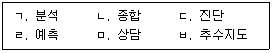
- ㄱ → ㄴ → ㄷ → ㄹ → ㅁ → ㅂ
- ㄷ → ㄱ → ㄴ → ㅁ → ㄹ → ㅂ
- ㄴ → ㄱ → ㄹ → ㄷ → ㅁ → ㅂ
- ㄱ → ㄷ → ㅁ → ㄴ → ㄹ → ㅂ
(정답률: 79%)
4. 6개의 생각하는 모자(six thinking hats) 기법에서 모자의 색상별 역할에 관한 설명으로 옳은 것은?
- 청색 - 낙관적이며, 모든 일이 잘 될 것이라고 생각한다.
- 적색 - 직관에 의존하고, 직감에 따라 행동한다.
- 흑색 - 본인과 직업들에 대한 사실들만을 고려한다.
- 황색 - 새로운 대안들을 찾으려 노력하고, 문제들을 다른 각도에서 바라본다.
(정답률: 71%)
5. Super가 제시한 흥미사정 기법에 해당하지 않는 것은?
- 표현된 흥미
- 선호된 흥미
- 조작된 흥미
- 조사된 흥미
(정답률: 65%)
6. 교류분석상담의 상담과정에서 내담자 자신의 부모자아, 성인자아, 어린이자아의 내용이나 기능을 이해하는 방법은?
- 구조분석
- 의사교류분석
- 게임분석
- 생활각본분석
(정답률: 63%)
7. 인지·정서·행동치료(REBT)의 상담기법 중 정서 기법에 해당하지 않는 것은?
- 역할연기
- 수치공격 연습
- 자기관리
- 무조건적 수용
(정답률: 41%)
8. 상담사가 비밀유지를 파기할 수 있는 경우와 거리가 가장 먼 것은?
- 내담자가 자살을 시도할 계획이 있는 경우
- 비밀을 유지하지 않는 것이 효과적이라고 슈퍼바이저가 말하는 경우
- 내담자가 타인을 해칠 가능성이 있는 경우
- 아동학대와 관련된 경우
(정답률: 86%)
9. 직업상담을 위한 면담에 대한 설명으로 옳은 것은?
- 내담자의 모든 행동은 이유와 목적이 있음을 분명하게 인지한다.
- 상담과정의 원만한 전개를 위해 내담자에게 태도변화를 요구한다.
- 침묵에 빠지지 않도록 상담자는 항상 먼저 이야기를 해야 한다.
- 초기면담에서 내담자에 대한 기준을 부여한다.
(정답률: 78%)
10. 사이버 직업상담 기법으로 적합하지 않은 것은?
- 질문내용 구상하기
- 핵심 진로논점 분석하기
- 진로논점 유형 정하기
- 직업정보 가공하기
(정답률: 63%)
11. 내담자가 자기지시적인 삶을 영위하고 상담사에게 의존하지 않게 하기 위해 상담사가 내담자와 지식을 공유하며 자기강화 기법을 적극적으로 활용하는 행동주의 상담기법은?
- 모델링
- 과잉교정
- 내현적 가감법
- 자기관리 프로그램
(정답률: 75%)
12. 상담사의 기본 기술 중 내담자가 전달하려는 내용에서 한 걸음 더 나아가 그 내면적 감정에 대해 반영하는 것은?
- 해석
- 공감
- 명료화
- 적극적 경청
(정답률: 79%)
13. 아들러(A. Adler)의 개인주의 상담에 관한 설명으로 맞는 것을 모두 고른 것은?
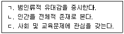
- ㄱ, ㄴ
- ㄱ, ㄷ
- ㄴ, ㄷ
- ㄱ, ㄴ, ㄷ
(정답률: 64%)
14. 다음은 어떤 상담이론에 관한 설명인가?
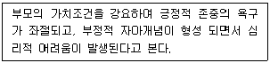
- 행동주의 상담
- 게슈탈트 상담
- 실존주의 상담
- 인간중심 상담
(정답률: 48%)
15. 직업상담 과정에서 내담자 목표나 문제의 확인·명료·상세 단계의 내용으로 적절하지 않은 것은?
- 내담자와 상담자 간의 상호 간 관계 수립
- 내담자의 현재 상태와 환경적 정보 수집
- 진단에 근거한 개입의 선정
- 내담자 자신의 정보수집
(정답률: 58%)
16. Super의 생애진로발달 이론에서 상담 목표로 옳은 것을 모두 고른 것은?
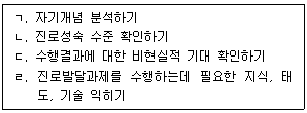
- ㄱ, ㄷ
- ㄱ, ㄴ, ㄹ
- ㄴ, ㄷ, ㄹ
- ㄱ, ㄴ, ㄷ, ㄹ
(정답률: 55%)
17. 생애진로사정의 구조에 포함되지 않는 것은?
- 진로사정
- 강점과 장애
- 훈련 및 평가
- 전형적인 하루
(정답률: 70%)
18. 다음 사례에서 면담 사정 시 사정단계에서 확인해야 하는 내용으로 가장 적합한 것은?
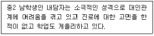
- 내담자의 잠재력, 내담자의 자기진단
- 인지적 명확성, 정신건강 문제, 내담자의 동기
- 내담자의 자기진단, 상담자의 정보제공
- 동기문제 해결, 상담자의 견해 수용
(정답률: 74%)
19. 비구조화 집단에 관한 설명으로 틀린 것은?
- 감수성 훈련, T집단이 해당된다.
- 폭넓고 깊은 상호작용이 이루어질 수 있다.
- 구조화집단보다 지도자의 전문성이 더욱 요구된다.
- 비구조화가 중요하기에 지도자가 어떤 계획을 세울 필요는 없다.
(정답률: 77%)
20. 직업상담의 문제 유형 중 Bordin의 분류에 해당하지 않는 것은?
- 의존성
- 확신의 결여
- 선택에 대한 불안
- 흥미와 적성의 모순
(정답률: 59%)
2과목: 직업심리학
21. 다음 중 진로 의사결정 모델(이론)에 해당하는 것은?
- Holland의 진로선택이론
- Vroom의 기대이론
- Super의 발달이론
- Krumboltz의 사회 학습이론
(정답률: 49%)
22. 진로발달이론 중 인지적 정보처리 이론의 핵심적인 가정으로 옳지 않은 것은?
- 직업 문제해결 능력은 지식과 마찬가지로 인지적인 기능에 따라 달라진다.
- 직업발달은 지식구조의 지속적 인 성장과 변화를 내포한다.
- 직업 문제해결과 의사결정은 인지적인 과정을 내포하고 있고 정서적인 과정은 포함되지 않는다.
- 직업 문제해결과 의사결정 기술의 발전은 정보처리 능력을 강화함으로써 이루어진다.
(정답률: 75%)
23. 다음에 해당하는 직무 및 조직 관련 스트레스 요인은?
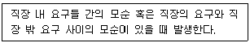
- 역할 갈등
- 역할 과다
- 과제 특성
- 역할 모호성
(정답률: 70%)
24. 진로성숙도 검사(CMI)의 태도척도 영역과 이를 측정하는 문항의 예가 바르게 짝지어진 것은?
- 결정성 - 나는 선호하는 진로를 자주 바꾸고 있다.
- 독립성 - 나는 졸업할 때까지는 진로선택 문제에 별로 신경을 쓰지 않겠다.
- 타협성 - 일하는 것이 무엇인지에 대해 생각한 바가 거의 없다.
- 성향 - 나는 하고 싶기는 하나 할 수 없는 일을 생각하느라 시간을 보내곤 한다.
(정답률: 67%)
25. 호손(Hawtiiorne) 연구에 관한 설명으로 틀린 것은?
- 인간이 조직에서 중요한 요소의 하나라는 사실을 강조하였다.
- 개인과 집단의 사회적·심리적 요소가 조직성과에 영향을 미친다는 사실을 인식하였다.
- 비공식조직이 조직성과에 영향을 미치는 것을 확인하였다.
- 작업의 과학화, 객관화, 분업화의 중요성을 강조하였다.
(정답률: 50%)
26. 직무 스트레스에 관한 설명으로 옳은 것은?
- 17-OHCS라는 당류부신피질 호르몬은 스트레스의 생리적 지표로서 매우 중요하게 사용된다.
- B형 행동유형이 A형 행동유형보다 높은 스트레스 수준을 유지한다.
- Yerkes와 Dodson의 U자형 가설은 스트레스 수준이 낮으면 작업능률이 높아진다는 가설이다.
- 일반적응증후군(GAS)은 저항단계, 경계단계, 소진단계 순으로 진행되면서 사람에게 나쁜 결과를 가져다준다.
(정답률: 64%)
27. 다음 중 일반적으로 가장 높은 신뢰도 계수를 기대할 수 있는 검사는?
- 표준화된 성취검사
- 표준화된 지능검사
- 자기보고식 검사
- 투사식 성격검사
(정답률: 67%)
28. 신입사원을 대상으로 부서 배치 후 6개월 이내에 자신이 도달하고 싶은 미래의 모습을 경력목표로 정하고 목표에 도달하기 위한 계획을 작성, 제출하도록 하여 자율적으로 경력목표를 달성할 수 있도록 지원하는 것은?
- 경력워크숍
- 직무순환
- 사내공모제
- 조기발탁제
(정답률: 70%)
29. 개인의 변화를 목표로 하는 이차적 스트레스 관리전략에 해 당하지 않는 것은?
- 이완 훈련
- 바이오피드백
- 직무 재설계
- 스트레스 관리 훈련
(정답률: 68%)
30. 심리검사를 실시할 때 지켜야 할 사항과 가장 거리가 먼 것은?
- 검사의 구두 지시사항을 미리 충분히 숙지 한다.
- 지나친 소음과 방해자극이 없는 곳에서 검사를 실시한다.
- 수검자에 대한 관심과 협조, 격려를 통해 수검자로 하여금 검사를 성실히 하도록 한다.
- 수검자에게 검사결과를 통보할 때는 일상적인 용어보다 통계적인 숫자나 용어를 중심으로 전달해야 한다.
(정답률: 77%)
31. 홀랜드(Holland)의 육각형 모델에서 창의성을 지향하는 아이디어와 자료를 사용해서 자신을 새로운 방식으로 표현하는 유형은?
- 현실형(R)
- 탐구형(I)
- 예술형 (A)
- 사회 형 (S)
(정답률: 71%)
32. 직업상담사 자격시험 문항 중 대학수학능력을 측정하는 문항이 섞여 있을 경우 가장 문제가 되는 것은?
- 타당도
- 신뢰도
- 객관도
- 오답지 매력도
(정답률: 71%)
33. 직무분석에 필요한 직무정보를 얻는 출처와 가장 거리가 먼 것은?
- 직무 현직자
- 현직자의 상사
- 직무 분석가
- 과거 직무 수행자
(정답률: 65%)
34. 특성요인이론에 관한 설명으로 맞는 것을 모두 고른 것은?
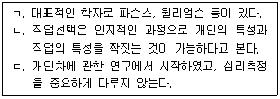
- ㄱ, ㄴ
- ㄱ, ㄷ
- ㄴ, ㄷ
- ㄱ, ㄴ, ㄷ
(정답률: 58%)
35. 2차 세계대전 중에 미국 공군이 개발한 것으로 모든 원점수를 1~9까지의 한자리 숫자체계로 전환한 것은?
- 스테나인 척도
- 서스톤 척도
- 서열척도
- T점수
(정답률: 67%)
36. 직업지도 시 '직업적응' 단계에서 이루어지는 것이 아닌 것은?
- 직업생활에 적응하기 위하여 노력한다.
- 여러 가지 직업 중에서 장단점을 비교한다.
- 직업전환 및 실업 위기에 대응하기 위한 자기만의 계획을 갖는다.
- 은퇴 후의 생애설계를 한다.
(정답률: 51%)
37. 스트롱-캠벨 흥미검사(SVIB-SCII)에 관한 설명으로 옳지 않은 것은?
- 직업전환에 관심이 있는 사람들에게 활용될 수 있다.
- 207개 직업별 흥미척도가 제시된다.
- 반응 관련 자료 및 특수척도 점수 등과 같은 자료가 제공된다.
- 사회 경제구조와 직업 형태에 적합한 18개 영역의 직업흥미를 분류하여 구성하였다.
(정답률: 47%)
38. 직업발달이란 직업 자아정체감을 형성해 나가는 계속적 과정이라고 간주하는 진로발달이론은?
- Ginzberg의 발달이론
- Super의 발달이론
- Tiedeman과 O'Hara의 발달이론
- Tuckman의 발달이론
(정답률: 54%)
39. 종업원 평가 방법 중 다양한 직무과업을 모방하여 설계한 여러 가지 모의과제로 구성된 것은?
- 평가 센터(assessment center)
- 경력 자원 센터(career resource center)
- 경력 워크숍(career workshop)
- 경력 연습책자(career workbook)
(정답률: 56%)
40. 직무분석 정보를 수집하는 기법 중 다음과 같은 장점을 지닌 것은?
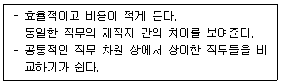
- 관찰법
- 면접법
- 설문지법
- 작업일지법
(정답률: 62%)
3과목: 직업정보론
41. 2020년 적용 최저임금은 얼마인가?
- 8350원
- 8530원
- 8590원
- 8950원
(정답률: 52%)
42. 한국표준산업분류(제10차)의 대분류별 개정 내용으로 틀린 것은?
- 채소작물 재배업에 마늘, 딸기 작물 재배업을 포함하였다.
- 전기자동차 판매 증가 등 관련 산업 전망을 감안하여 전기 판매업 세분류를 신설하였다.
- 항공운송업을 항공 여객과 화물 운송업으로 변경하였다.
- 행정 부문은 정부 직제 및 기능 등을 고려하여 전면 재분류하였다.
(정답률: 58%)
43. 공공직업 정보의 일반적인 특성을 모두 고른 것은?
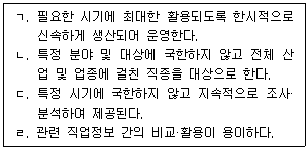
- ㄱ, ㄴ, ㄷ
- ㄱ, ㄴ, ㄹ
- ㄱ, ㄷ, ㄹ
- ㄴ, ㄷ, ㄹ
(정답률: 72%)
44. 한국표준산업분류(제10차)의 “A 농업, 임업 및 어업” 분야 분류 시 유의사항으로 틀린 것은?
- 구입한 농·임·수산물을 가공하여 특정 제품을 제조하는 경우에는 제조업으로 분류
- 농·임·수산업 관련 조합은 각각의 사업부문별로 그 주된 활동에 따라 분류
- 농업생산성을 높이기 위한 지도·조언 등을 수행하는 정부기관은 “경영컨설팅업”에 분류
- 수상오락 목적의 낚시장 및 관련 시설 운영활동은 “낚시장 운영업”에 분류
(정답률: 56%)
45. 취업성공패키지Ⅰ에 해당하지 않는 것은?
- 니트족
- 북한이탈주민
- 생계급여수급자
- 실업급여 수급자
(정답률: 50%)
46. 한국직업사전(2020)의 부가직업정보 중 작업환경에 대한 설명으로 틀린 것은?
- 작업환경은 해당 직업의 직무를 수행하는 작업원에게 직접적으로 물리적, 신체적 영향을 미치는 작업장의 환경요인을 나타낸 것이다.
- 작업환경의 측정은 작업자의 반응을 배제하고 조사자가 느끼는 신체적 반응으로 판단한다.
- 작업환경은 저온·고온, 다습, 소음·진동, 위험내재, 대기환경미흡으로 구분한다.
- 작업환경은 산업체 및 작업장에 따라 달라질 수 있으므로 절대적인 기준이 될 수 없다.
(정답률: 72%)
47. 한국표준산업분류(제10차)의 통계단위는 생산활동과 장소의 동질성의 차이에 따라 다음과 같이 구분된다. ( )에 알맞은 것은?
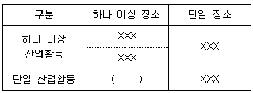
- 기업집단 단위
- 지역 단위
- 기업체 단위
- 활동유형 단위
(정답률: 64%)
48. 워크넷(직업·진로)에서 학과정보를 계열별로 검색하고자 할 때 선택할 수 있는 계열이 아닌 것은?
- 문화관광계열
- 교육계열
- 자연계열
- 예체능계열
(정답률: 71%)
49. 다음 설명에 해당하는 직업훈련지원제도는?
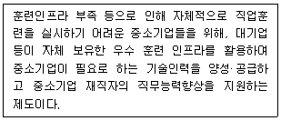
- 국가인적자원개발컨소시엄
- 사업주지원훈련
- 국가기간전략산업직종훈련
- 청년취업아카데미
(정답률: 65%)
50. 한국표준직업분류(제7차)에서 직업분류의 목적이 아닌 것은?
- 각종 사회·경제통계조사의 직업단위 기준으로 활용
- 취업알선을 위한 구 인·구직안내 기준으로 활용
- 직종별 급여 및 수당지급 결정기준으로 활용
- 산업활동 유형을 분류하는 기준으로 활용
(정답률: 34%)
51. 국가기술자격종목과 그 직무분야의 연결이 틀린 것은?
- 가스산업기사 - 환경·에 너지
- 건설안전산업기사 - 안전관리
- 광학기기산업기사 - 전기·전자
- 방수산업기사 - 건설
(정답률: 56%)
52. 다음 중 비경제활동인구에 해당하는 것은?
- 수입목적으로 1시간 일한 자
- 일시휴직자
- 신규실업자
- 전업학생
(정답률: 70%)
53. 실기능력이 중요하여 고용노동부령이 정하는 필기시험이 면제되는 기능사 종목이 아닌 것은?
- 측량기능사
- 도화기능사
- 도배기능사
- 방수기능사
(정답률: 57%)
54. 워크넷에 대한 설명으로 틀린 것은?
- 직업심리검사, 취업가이드, 취업지원프로그램 등 각종 취업지원서비스를 제공한다.
- 기업회원은 허위구인 방지를 위해 고용센터에 방문하여 구인신청서를 작성해야 한다.
- 청년친화 강소기업, 공공기관, 시간선택제 일자리, 기업공채 등의 채용정보를 제공한다.
- 직종별, 근무지역별, 기업형태별 채용정보를 제공한다.
(정답률: 74%)
55. 직업정보 수집 시 2차 자료의 원천에 해당하지 않는 것은?
- 대중매체
- 공문서와 공식 기록
- 직접 수행한 심층면접자료
- 민간부문 문서
(정답률: 58%)
56. 한국표준직업분류(제7차)에서 직업분류의 개념과 기준에 관한 설명이다. ( ) 안에 알맞은 직업분류 단위는?
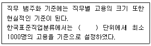
- 대분류
- 중분류
- 소분류
- 세분류
(정답률: 51%)
57. 직업성립의 일반요건과 가장 거리가 먼 것은?
- 윤리성
- 경제성
- 계속성
- 사회보장성
(정답률: 62%)
58. 국가기술자격 서비스분야 종목 중 응시자격에 제한이 없는 것으로만 짝지어진 것은?
- 직업상담사2급 - 임상심리사2급 - 스포츠경영관리사
- 사회조사분석사2급 - 소비자전문상담사2급 - 텔레마케팅관리사
- 직업상담사2급 - 컨벤션기획사2급 - 국제의료관광코디네이터
- 컨벤션기획사2급 - 스포츠경영관리사 - 국제의료관광코디네이터
(정답률: 64%)
59. 직업정보 수집을 위한 서베이 조사에 관한 설명으로 틀린 것은?
- 면접조사는 우편조사에 비해 비언어적 행위의 관찰이 가능하다.
- 일반적으로 전화조사는 면접조사에 비해 면접시간이 길다.
- 질문의 순서는 응답률에 영향을 줄 수 있다.
- 폐쇄형 질문의 응답범주는 상호배타적이어야 한다
(정답률: 69%)
60. 워크넷의 채용정보 검색조건에 해당하지 않는 것은?
- 희망임금
- 학력
- 경력
- 연령
(정답률: 64%)
4과목: 노동시장론
61. 생산성 임금제를 따를 때 실질 생산성 증가율이 5 % 이고 물가상승률이 2%라고 하면 명목임금의 인상분은?
- 3%
- 5%
- 7%
- 10%
(정답률: 62%)
62. 다음 중 통상임금에 포함되지 않는 것은?
- 기본급
- 직급수당
- 직무수당
- 특별급여
(정답률: 71%)
63. 효율임금정책이 높은 생산성을 가져오는 원인에 관한 설명으로 틀린 것은?
- 고임금은 노동자의 직장상실비용을 증대시켜서 작업 중에 태만하지 않게 한다.
- 고임금 지불기업은 그렇지 않은 기업에 비해 신규노동자의 훈련에 많은 비용을 지출한다.
- 고임금은 노동자의 기업에 대한 충성심과 귀속감을 증대시킨다.
- 고임금 지불기업은 신규채용 시 지원노동자의 평균자질이 높아져 보다 양질의 노동자를 고용할 수 있다.
(정답률: 66%)
64. 임금격차의 원인으로서 통계적 차별(statistical discrimination)이 일어나는 경우는?
- 비숙련 외국인노동자에게 낮은 임금을 설정할 때
- 임금이 개별 노동자의 한계생산성에 근거하여 설정될 때
- 사용자가 자신의 경험을 기준으로 근로자의 임금을 결정할 때
- 사용자가 근로자의 생산성에 대해 불완전한 정보를 갖고 있어 평균적인 인식을 근거로 임금을 결정할 때
(정답률: 56%)
65. 실업조사 등에 관한 설명으로 옳은 것은?
- 경제가 완전고용 상태일 때 실업률은 0이다,
- 실업률은 실업자 수를 생산가능인구로 나눈 것이다.
- 일기불순 등의 이유로 일하지 않고 있는 일시적 휴직자는 실업자로 본다.
- 실업률 조사 대상 주간에 수입을 목적으로 1시간 이상 일한 경우 취업자로 분류된다.
(정답률: 57%)
66. 임금관리의 주요 구성요소와 가장 거리가 먼 것은?
- 기본급과 수당 등의 임금체계
- 임금지급 시기
- 노동생산성 수준에 따른 임금수준
- 고정급제와 성과급제 등의 임금형태
(정답률: 57%)
67. 노동자가 자신에게 가장 유리한 직장을 찾기 위해서 정보수집활동에 종사하고 있을 동안의 실업상태로 정보의 불완전성에 기인하는 실업은?
- 계절적 실업
- 마찰적 실업
- 경기적 실업
- 구조적 실업
(정답률: 65%)
68. 직업이나 직종의 여하를 불문하고 동일산업에 종사하는 노동자가 조직하는 노동조합의 형태는?
- 직업별 노동조합
- 산업별 노동조합
- 기업별 노동조합
- 일반 노동조합
(정답률: 68%)
69. 사용자의 부당해고로부터 근로자 보호를 강화하는 정책을 실시할 때 발생되는 효과로 옳은 것은?
- 고용수준 감소, 근로시간 증가
- 고용수준 증가, 근로시간 감소
- 고용수준 증가, 근로시간 증가
- 고용수준 감소, 근로시간 감소
(정답률: 48%)
70. 노동수요탄력성의 크기에 영향을 미치는 요인과 거리가 가장 먼 것은?
- 생산물 수요의 가격탄력성
- 총 생산비에 대한 노동비용의 비중
- 노동의 대체곤란성
- 대체생산요소의 수요탄력성
(정답률: 49%)
71. 실업에 관한 설명으로 틀린 것은?
- 실업급여의 확대는 탐색적 실업을 증가시킬 수 있다.
- 경기변동 때문에 발생하는 실업은 경기적 실업이다.
- 구직단념자는 비경제활동인구로 분류된다.
- 비수요부족 실업은 경기적 실업을 의미한다.
(정답률: 60%)
72. 노사관계의 3주체(tripartite)를 바르게 짝지은 것은?
- 노동자 - 사용자 - 정부
- 노동자 - 사용자 - 국회
- 노동자 - 사용자 - 정당
- 노동자 - 사용자 - 사회단체
(정답률: 71%)
73. 노동자 7명의 평균생산량이 20단위 일 때, 노동자를 추가로 1명 더 고용하여 평균생산량이 18단위로 감소하였다면, 이때 추가로 고용된 노동자의 한계생산량은?
- 4단위
- 5단위
- 6단위
- 7단위
(정답률: 60%)
74. 노동조합의 단체교섭 결과가 비조합원에게도 혜택이 돌아가는 현실에서 노동조합의 조합원이 아닌 비조합원에게도 단체교섭의 당사자인 노동조합이 회비를 징수하는 숍(shop) 제도는?
- 유니온숍(union shop)
- 에이전시숍(agency shop)
- 클로즈드숍(dosed shop)
- 오픈숍(open shop)
(정답률: 61%)
75. 정부가 임금을 인상시킬 때 오히려 고용이 증대되는 경우는?
- 공급독점의 노동시장
- 수요독점의 노동시장
- 완전경쟁의 노동시장
- 복점의 노동시장
(정답률: 48%)
76. 노동공급 탄력성이 무한대인 경우 노동공급 곡선 형태는?
- 수평이다.
- 수직이다.
- 우상향이다.
- 우하향이다.
(정답률: 48%)
77. 소득정책의 효과에 대한 설명으로 틀린 것은?
- 성장산업의 위축을 초래할 수 있다.
- 행정적 관리비용을 절감할 수 있다.
- 임금억제에 이용될 가능성이 크다.
- 급격한 물가상승기에 일시적으로 사용하면 효과를 거둘 수 있다.
(정답률: 59%)
78. 노동공급곡선이 그림과 같을 때 임금이 W0 이상으로 상승한 경우의 설명으로 옳은 것은?
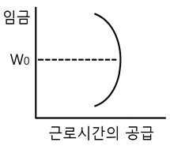
- 대체효과가 소득효과를 압도한다.
- 소득효과가 대체효과를 압도한다.
- 대체효과가 규모효과를 압도한다.
- 규모효과가 대체효과를 압도한다.
(정답률: 62%)
79. 기업별 노동조합의 장점이 아닌 것은?
- 조합 구성이 용이하다.
- 단체교섭 타결이 용이하다.
- 노동시장 분단을 완화시킬 수 있다.
- 조합원 간의 친밀감이 높고 강한 연대감을 가질 수 있다.
(정답률: 58%)
80. 파업이론에 대한 설명이 옳은 것을 모두 고른 것은?
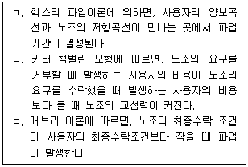
- ㄱ, ㄴ
- ㄴ, ㄷ
- ㄱ, ㄷ
- ㄱ, ㄴ, ㄷ
(정답률: 53%)
5과목: 노동관계법규
81. 직업안정법령상 직업정보제공사업자의 준수사항으로 틀린 것은?
- 구인자의 업체명이 표시되어 있지 아니한 구인광고를 게재하지 아니할 것
- 직업정보제공매체의 구인·구직의 광고에는 구인·구직자의 주소 또는 전화번호를 기재하지 아니할 것
- 구직자의 이력서 발송을 대행하거나 구직자에게 취업추천서를 발부하지 아니할 것
- 직업정보제공사업의 광고문에 "취업추천"·"취업지원" 등의 표현을 사용하지 아니할 것
(정답률: 63%)
82. 남녀고용평등과 일·가정 양립 지원에 관한 법령상 1천만원 이하의 과태료 부과행위에 해당하는 것은?
- 난임치료휴가를 주지 아니한 경우
- 성희롱 예방 교육을 하지 아니한 경우
- 직장 내 성희롱 발생 사실 조사 과정에서 알게 된 비밀을 다른 사람에게 누설한 경우
- 사업주가 직장 내 성희롱을 한 경우
(정답률: 42%)
83. 기간제 및 단시간근로자 보호 등에 관한 법률상 사용자가 기간제근로자와 근로계약을 체결하는 때에 서면으로 명시하여야 하는 사항을 모두 고른 것은?
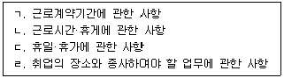
- ㄱ, ㄴ
- ㄴ, ㄷ, ㄹ
- ㄱ, ㄷ, ㄹ
- ㄱ, ㄴ, ㄷ, ㄹ
(정답률: 68%)
84. 고용정책 기본법상 명시된 목적이 아닌 것은?
- 근로자의 고용안정 지원
- 실업의 예방 및 고용의 촉진
- 노동시장의 효율성과 인력수급의 균형 도모
- 기업의 일자리 창출과 원활한 인력확보 지원
(정답률: 43%)
85. 고용보험법령상 피보험자격의 신고에 관한 설명으로 틀린 것은?
- 사업주가 피보험자격에 관한 사항을 신고하지 아니하면 근로자가 신고할 수 있다.
- 사업주는 그 사업에 고용된 근로자의 피보험자격의 취득 및 상실 등에 관한 사항을 고용노동부장관에게 신고하여야 한다.
- 자영업자인 피보험자는 피보험자격의 취득 및 상실에 관한 신고를 하지 아니한다.
- 피보험자격의 취득 및 상실 등에 관한 신고는 그 사유가 발생한 날로부터 15일 이내에 하여야 한다.
(정답률: 44%)
86. 고용보험법상 구직급여의 수급 요건에 해당하지 않는 것은?
- 이직일 이전 18개월 간 피보험 단위기간이 합산하여 180일 이상일 것
- 근로의 의사와 능력이 있음에도 불구하고 취업하지 못한 상태에 있을 것
- 전직 또는 자영업을 하기 위하여 이직한 경우
- 재취업을 위한 노력을 적극적으로 할 것
(정답률: 66%)
87. 남녀고용평등과 일·가정 양립지원에 관한 법률에 대한 설명으로 틀린 것은?
- 근로자란 사업주에게 고용된 자와 취업할 의사를 가진 자를 말한다.
- 사업주가 임금차별을 목적으로 설립한 별개의 사업은 동일한 사업으로 본다.
- 사업주는 육아기 근로시간 단축을 하고 있는 근로자의 명시적 청구가 있으면 단축된 근로시간 외에 주 12시간 이내에서 연장근로를 시킬 수 있다.
- 사업주는 사업을 계속할 수 없는 경우에도 육아휴직 중인 근로자를 육아휴직 기간에 해고하지 못한다.
(정답률: 61%)
88. 고용상 연령차별금지 및 고령자고용촉진에 관한 법령상 준고령자의 정의로 옳은 것은?
- 40세 이상 45세 미만인 사람
- 45세 이상 50세 미만인 사람
- 50세 이상 55세 미만인 사람
- 55세 이상 60세 미만인 사람
(정답률: 67%)
89. 고용정책 기본법령상 실업대책사업에 관한 설명으로 틀린 것은?
- 실업자에 대한 공공근로사업은 실업대책사업에 해당한다.
- 6개월 이상 기간을 정 하여 무급으로 휴직하는 사람은 실업자로 본다.
- 실업대책사업의 일부를 한국산업인력공단에 위탁할 수 있다.
- 실업대책사업에는 많은 인력을 사용하는 사업이 포함되어야 한다.
(정답률: 39%)
90. 남녀고용평등과 일·가정 양립 지원에 관한 법령상 ( ) 안에 들어갈 숫자의 연결이 옳은 것은?
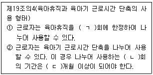
- ㄱ : 1, ㄴ : 2, ㄷ : 2
- ㄱ : 2, ㄴ : 1, ㄷ : 2
- ㄱ : 1, ㄴ : 2, ㄷ : 3
- ㄱ : 2, ㄴ : 1, ㄷ : 3
(정답률: 57%)
91. 근로기준법령상 근로시간 및 휴게시간의 특례 사업에 해당하지 않는 것은?
- 수상운송업
- 항공운송업
- 육상운송 및 ' 파이프라인 운송업
- 노선(路線) 여객자동차운송사업
(정답률: 56%)
92. 근로자직업능력개발법상 직업능력개발훈련이 중요시 되어야 할 대상으로 명시되지 않은 것은?
- 「국민기초생활 보장법」에 따른 수급권자
- 「국가유공자 등 예우 및 지원에 관한 법률」에 따른 국가유공자
- 「제대군인지원에 관한 법률」에 따른 제대군인
- 「한부모가족지원법」에 따른 지원대상자
(정답률: 51%)
93. 직업안정법상 직업소개사업을 겸업할 수 있는 것은?
- 「결혼중개업의 관리에 관한 법률」상 결혼중개업
- 「공중위생관리법」상 숙박업
- 「식품위생법」상 식품접객업 중 유흥주점영업
- 「식품위생법」상 식품접객업 중 일반음식점영업
(정답률: 54%)
94. 고용보험법상 ( )에 알맞은 것은?
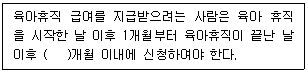
- 1
- 3
- 6
- 12
(정답률: 52%)
95. 근로자퇴직급여 보장법령상 용어의 정의에 관한 설명으로 틀린 것은?
- 퇴직급여제도란 확정급여형퇴직연금제도, 확정기여형퇴직연금제도 및 개인형퇴직연금제도를 말한다.
- 사용자란 사업주 또는 사업의 경영담당자 또는 그 밖에 근로자에 관한 사항에 대하여 사업주를 위하여 행위하는 자를 말한다.
- 임금이란 사용자가 근로의 대가로 근로자에게 임금, 봉급, 그 밖에 어떠한 명칭으로든지 지급하는 일체의 금품을 말한다.
- 확정급여형퇴직연금제도란 근로자가 받을 급여의 수준이 사전에 결정되어 있는 퇴직연금제도를 말한다.
(정답률: 44%)
96. 근로자직업능력 개발 법령상 고용노동부장관이 직업능력개발사업을 하는 사업주에게 지원할 수 있는 비용이 아닌 것은?
- 근로자를 대상으로 하는 자격검정사업 비용
- 직업능력개발훈련을 위해 필요한 시설의 설치 사업 비용
- 근로자의 경력개발관리를 위하여 실시하는 사업 비용
- 고용노동부장관의 인정을 받은 직업능력개발훈련과정의 수강 비용
(정답률: 50%)
97. 근로기준법령상 경영상의 이유에 의한 해고에 관한 설명으로 옳은 것은?
- 사용자는 근로자대표에 게 해고를 하려는 날의 60일 전까지 해고의 기준을 통보하여야 한다.
- 경영 악화를 방지하기 위한 사업의 합병은 긴박한 경영상의 필요가 있는 것으로 볼 수 없다.
- 사용자는 근로자를 해고하려면 해고사유와 해고시기를 서면으로 통지하여야 한다.
- 사용자는 경영상 이유에 의하여 해고된 근로자에 대하여 재취업 등 필요한 조치를 우선적으로 취하여야 한다.
(정답률: 50%)
98. 근로기준법령상 임금에 관한 설명으로 틀린 것은?
- 고용노동부장관은 체불사업주의 명단을 공개할 경우 체불사업주에게 3개월 이상의 기간을 정하여 소명 기회를 주어야 한다.
- 단체협약에 특별한 규정이 있는 경우에는 임금의 일부를 공제하거나 통화 이외의 것으로 지급할 수 있다.
- 사용자는 도급으로 사용하는 근로자에게 근로시간에 따라 일정액의 임금을 보장하여야 한다.
- 사용자는 고용노동부장관의 승인을 받은 경우 통상임금의 100분의 70에 못 미치는 휴업수당을 지급할 수 있다.
(정답률: 50%)
99. 채용절차의 공정화에 관한 법률에 관한 설명으로 틀린 것은?
- 고용노동부장관은 입증자료의 표준양식을 정하여 구인자에게 그 사용을 권장할 수 있다.
- 원칙적으로 상시 30명 이상의 근로자를 사용하는 사업장의 채용절차에 적용한다.
- 채용서류란 기초심사자료, 입증자료, 심층심사자료를 말한다.
- 심층심사자료란 작품집, 연구실적물 등 구직자의 실력을 알아볼 수 있는 모든 물건 및 자료를 말한다.
(정답률: 33%)
100. 헌법상 노동3권과 관련이 있는 것은?
- 법률에 의해 최저임금제 보장
- 자주적인 단체교섭권의 보장
- 연소근로자 특별한 보호
- 국가유공자의 우선근로 기회 부여
(정답률: 59%)